건축설비기사 (2012-03-04 기출문제)
1과목: 건축일반
1. 병원건축에서 분관식(pavilion type)에 대한 설명으로 옳은 것은?
- 각 병실마다 고르게 일조를 얻을 수 있다.
- 의료, 간호서비스가 집중될 수 있다.
- 동선이 짧아진다.
- 대지가 협소해도 가능하다.
(정답률: 87%)

2. 다음 중 건축화 조명의 종류에 속하지 않는 것은?
- 광천장조명
- 밸런스조명
- 코오브조명
- 국부조명
(정답률: 86%)
3. 주택의 쾌적성을 유지하기 위한 표면결로방지에 관한 설명 중 옳은 것은?
- 벽이나 천장의 실내측 표면온도를 내려 실내외 온도차를 없앤다.
- 외벽의 단열강화로 실내측 표면온도를 상승시킨다.
- 각 실을 될 수 있는 한 넓게 잡고 실내의 열용량을 크게 한다.
- 외벽을 될 수 있는 한 통기성이 없는 구조로 하여 외기로부터의 습기를 차단한다.
(정답률: 66%)
4. 병원계획에 대한 설명 중 옳지 않은 것은?
- 외래진료부의 운영방식에서 오픈 시스템은 일반적으로 대규모의 각종 과를 필요로 한다.
- 1개의 간호사 대기소에서 관리할 수 있는 병상수는 30 ~ 40개 이하로 한다.
- 병원의 조직은 시설계획상 병동부, 중앙진료부, 외래부, 공급부, 관리부 등으로 구분되며, 각부는 동선이 교차되지 않도록 계획되어야 한다.
- 일반적으로 입원환자의 병상수에 따라 외래, 수술, 급식 등 모든 병원의 시설규모가 결정된다.
(정답률: 68%)
5. 건축물에 루버(louver)를 설치하는 가장 주된 이유는?
- 자연환기를 유지하기 위하여
- 외관상 변화를 주기 위하여
- 직사광선을 막기 위하여
- 비를 막기 위하여
(정답률: 75%)
6. 도서관 출납 시스템에 대한 설명 중 옳지 않은 것은?
- 개가식은 자유개가식, 안전개가식, 반개가식, 등이 있다.
- 폐가식은 열람자 자신이 서가에서 자료를 꺼내서 관원의 확인을 받아 대출기록을 제출하는 방식이다.
- 자유개가식에서는 반납할 때 서가의 배열이 흩어지는 것을 방지하기 위해 반납대를 두는 경우도 있다.
- 폐가식은 방재, 방습 등을 위해 서고자체의 실내환경을 유지해야 한다.
(정답률: 90%)
7. 고층사무소 건축의 코어계획에 관한 설명 중 옳은 것은?
- 화장실은 그 위치가 외래자에게 잘 알려지지 않도록 한다.
- 계단과 엘리베이터 및 화장실은 가능한 한 접근시킨다.
- 엘리베이터는 가급적 건물의 모서리에 배치한다.
- 특별피난계단 상호간의 간격은 법정거리 내에서 가능한 가깝게 한다.
(정답률: 69%)
8. 철근 콘크리트 단순보의 단부에 늑근을 많이 사용하여야 되는 이유는?
- 보의 전단 저항력을 높이기 위하여
- 보의 휨 저항력을 높이기 위하여
- 보의 주근 정착을 위하여
- 철근과 콘크리트의 부착력을 높이기 위하여
(정답률: 64%)
9. 건축 음환경의 명료도에 대한 설명으로 옳지 않은 것은?
- 명료도는 사람이 말을 할 때 어느 정도 정확하게 청취할 수 있는가에 대해 표시하는 기준을 백분율로 나타낸 것이다.
- 명료도는 잔향시간이 증가하면 증대된다.
- 음의 세기에 의한 명료도는 음압레벨이 70 ~ 80dB에서 가장 좋다.
- 명료도는 소음이 증가하면 저하한다.
(정답률: 79%)
10. 모임지붕에서 중도리가 직각으로 만나는 귀에 마루대에서 처마도리까지 걸쳐대어 귀서까래를 받는 부재를 무엇이라 하는가?
- 달대공
- 우미량
- 추녀
- 종보
(정답률: 45%)
11. 다음 중 건식구조와 가장 거리가 먼 공법은?
- 대형패널(panel) 공법
- 조립식 커튼월(curtain wall) 공법
- 슬립 폼(slip form) 공법
- 틸트 업(tilt up) 공법
(정답률: 72%)
12. 모듈러 플래닝(Modular Planning)에 대한 설명 중 옳지 않은 것은?
- 건축구성재의 다량생산이 용이해지고, 생산비용이 낮아질 수 있다.
- 건축구성재의 수송이나 취급이 편리해진다.
- 국제적인 MC를 사용하면 건축구성재의 국제교역이 용이해진다.
- 현장작업이 복잡해 공사기간이 길어질 수 있다.
(정답률: 83%)
13. 일사량에 대한 설명 중 옳지 않은 것은?
- 일사량은 지면부근의 수평 평면에 입사하는 태양에너지의 단위면적당 양이다.
- 전천일사량은 단위면적의 수평면에 입사하는 태양복사의 총량이며, 직달일사, 천공의 전방향에서 입사하는 산란일사 및 구름에서의 반사일사를 합한 것이다.
- 직달일사량은 단위면적의 수평면에 입사하는 태양복사중 산란광 및 반사광만을 포함한 일사량이다.
- 산란일사량은 단위면적의 수평면에 입사하는 태양복사중 직달일사를 제외하고, 대기 중에서 공기분자, 수증기, 에어로졸 등으로 산란된 빛의 에너지량이다.
(정답률: 78%)
14. 다음 중 사무소 건축에 있어서 개방식 배치에 관한 설명으로 옳지 않은 것은?
- 소음이 들리고 독립성이 결핍되어 있은 결점이 있다.
- 칸막이 벽이 없어서 개실 시스템보다 공사비가 적게 든다.
- 공간에 융통성이 없어 전면적을 유용하게 이용할 수 없다.
- 큰 사무실 형식에 많이 채용되며 임대자가 직접 이동식 파티션 등으로 적절한 프라이버시를 확보한다.
(정답률: 82%)
15. 철근콘크리트 보를 타설하는 과정에서 부득이하여 이어붓기를 할 때 그 위치로서 옳은 것은?
- 보의 단부
- 스팬의 1/8 지점
- 스팬의 1/5 지점
- 스팬의 1/2 지점
(정답률: 72%)
16. 철골구조의 특성에 대한 설명 중 옳지 않은 것은?
- 철근콘크리트구조에 비해 경량의 구조체를 만들 수있다.
- 재료 특성상 압축재는 좌굴에 대한 검토가 필요하다.
- 해체가 어렵고 재사용이 불가능하다.
- 내화성이 낮아 내화 피복이 필요하다.
(정답률: 80%)
17. 다음 중 새집증후군(sick house syndrome)의 원인과 가장 거리가 먼 것은?
- 건물의 기밀성 증대로 인한 환기부족 현상
- 건자재, 시공재의 화학물질사용 증가
- 생활용품으로 화학제품 사용의 증가
- 시공결함으로 인한 외부공기 유입현상
(정답률: 83%)
18. 쌓기 전 시멘트벽돌을 물축이기 하는 가장 주된이유는?
- 벽돌의 파손 방지
- 모르타르의 수분흡수 방지
- 화재방지
- 백화방지
(정답률: 78%)
19. 다음 중 서로 관련된 용어의 연결이 옳지 않은 것은?
- 플로어 힌지 –창호철물
- 인서트 –지붕틀
- 턴버클 –인장재 접합
- 징두리 –벽하부
(정답률: 60%)
20. 다음 중 플랫슬래브에서 기둥에 의한 슬래브의 펀칭(뚫림)현상을 방지하는 대책이 아닌 것은?
- 슬래브 두께 증가
- 드롭 판넬 설치
- 기둥 철근량 증가
- 캐피탈 설치
(정답률: 73%)
2과목: 위생설비
21. 급수배관 내에 공기실(air chamber)을 설치하는 이유로 가장 알맞은 것은?
- 수압시험을 하기 위해
- 통기관의 연결을 위해
- 수격작용을 방지하기 위해
- 급수관의 신축을 방지하기 위해
(정답률: 82%)
22. 옥내소화전설비의 화재안전기준에 따른 용어의 정의가 옳지 않은 것은?
- 진공계라 함은 대기압 이상의 압력과 대기압 이하의 압력을 측정할 수 있는 계측기를 말한다.
- 가압수조라 함은 가압원인 압축공기 또는 불연성 고압기체에 따라 소방용수를 가압시키는 수조를 말한다.
- 충압펌프라 함은 배관내 압력손실에 따른 주펌프의 빈번한 기동을 방지하기 위하여 충압역할을 하는 펌프를 말한다.
- 체절운전이라 함은 펌프의 성능시험을 목적으로 펌프 토출측의 개폐밸브를 닫은 상태에서 펌프를 운전하는 것은 말한다.
(정답률: 64%)
23. 강관 이음쇠에 관한 설명으로 옳지 않은 것은?
- 엘보우(elbow)는 관의 방향을 바꿀 때 사용된다.
- 티(tee), 크로스(cross)는 관을 도중에서 분기할 때 사용된다.
- 레듀서(reducer)는 관경이 서로 다른 관을 접속할 때 사용된다.
- 플러그(plug), 캡(cap)은 동일 관경의 관을 직선 연결 할 때 사용된다.
(정답률: 88%)
24. 국소식 급탕방식에 관한 설명으로 옳은 것은?
- 배관 및 기기로부터의 열손실이 중앙식보다 많다.
- 배관에 의해 필요 개소 어디든지 급탕할 수 있다.
- 건물 완공 후에도 급탕 개소의 증설이 중앙식보다 쉽다.
- 기구의 동시이용률을 고려하므로 가열장치의 총용량을 적게 할 수 있다.
(정답률: 75%)
25. 다음 중 유량선도를 이용한 급수관의 관경 결정순서에서 가장 먼저 이루어지는 사항은?
- 관 재료의 결정
- 순간 최대유량의 산정
- 관로의 상당길이 산정
- 허용마찰손실수두 계산
(정답률: 60%)
26. 급수방식 중 고가수조방식에 관한 설명으로 옳지 않은 것은?
- 급수압력이 일정하다.
- 위생성 측면에서 가장 바람직한 방식이다.
- 대규모의 급수 수요에 쉽게 대응할 수 있다.
- 단수시에도 일정량의 급수를 계속할 수 있다.
(정답률: 86%)
27. 도시가스 사용시설의 가스계량기와 화기 사이에 유지하여야 하는 거리는 최소 얼마 이상이어야 하는가? (단, 그 시설 안에서 사용하는 자체화기는 제외)
- 1m
- 1.5m
- 2m
- 3m
(정답률: 66%)
28. 플러시 밸브식 대변기에 관한 설명으로 옳지 않은 것은?
- 대변기의 연속사용이 불가능하다.
- 일반 가정용으로 사용이 곤란하다.
- 로 탱크 방식에 비해 최저 필요 수압이 크다.
- 세정음은 유수음도 포함되기 때문에 소음이 크다.
(정답률: 73%)
29. 물의 경도에 관한 설명으로 옳지 않은 것은?
- 경도의 표시는 도(度) 또는 ppm이 사용된다.
- 경도가 큰 물을 경수, 경도가 낮은 물을 연수라고 한다.
- 일반적으로 물이 접하고 있는 지층의 종류와 관계없이 지표수는 경수, 지하수는 연수로 간주된다.
- 물의 경도는 물 속에 녹아있는 칼슘, 마그네슘 등의 염류의 양을 탄산칼슘의 농도로 환산하여 나타낸 것이다.
(정답률: 80%)
30. 탕의 사용상태가 간헐적이며 일시적으로 사용량이 많은 건물에서 급탕설비의 설계 방법으로 가장 알맞은 것은? (단, 중앙식 급탕방식이며 증기를 열원으로 하는 열교환기 사용)
- 저탕용량을 크게 하고 가열능력도 크게 한다.
- 저탕용량은 크게 하고 가열능력은 작게 한다.
- 저탕용량은 작게 하고 가열능력은 크게 한다.
- 저탕용량을 작게 하고 가열능력도 작게 한다.
(정답률: 73%)
31. 양수량이 650L/min, 전양정이 50m인 소화펌프의 축동력은? (단, 펌프의 효율은 50% 이다.)
- 5.3W
- 10.6W
- 5.3kW
- 10.6kW
(정답률: 61%)
32. 배수⋅통기 배관의 시공에 관한 설명으로 옳지 않은 것은?
- 배수수직관의 최하부에는 청소구를 설치한다.
- 배수수직관의 관경은 최하부부터 최상부까지 동일하게 한다.
- 간접배수계통의 통기관은 일반 통기계통에 접속시키지 않고 단독으로 대기 중에 개구한다.
- 통기관을 수평으로 설치하는 경우에는 그 층의 최고 위치에 있는 위생기구의 오버플로우면으로부터 100mm 낮은 위치에서 수평 배관한다.
(정답률: 61%)
33. 급탕배관의 관경 결정에서 기구 급탕부하 단위는 기구 급수부하 단위의 얼마 정도로 하는가?
- 1/2
- 1/3
- 1/4
- 3/4
(정답률: 44%)
34. 다음 중 배관의 재질을 선택할 때 고려할 사항과 가장 거리가 먼 것은?
- 사용온도
- 사용유량
- 사용압력
- 사용유체
(정답률: 70%)
35. 배수⋅통기 배관을 나타낸 다음 그림에서 a가 가리키고 있는 배관의 종류는 무엇인가? (단, 그림에서 실선의 배관은 배수관을 , 점선의 배관은 통기관을 나타낸다.)
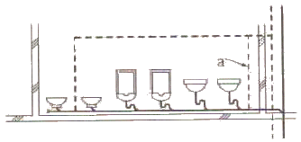
- 도피통기관
- 루프통기관
- 각개통기관
- 결합통기관
(정답률: 63%)
36. 배수트랩과 통기관에 관한 설명으로 옳지 않은 것은?
- 통기관을 설치하면 배수능력이 향상된다.
- 배수트랩을 설치하면 배수능력이 향상된다.
- 배수트랩은 봉수가 파괴되지 않는 구조로 한다.
- 통기관은 사이폰 작용에 의해서 트랩봉수가 파괴되는 것을 방지한다.
(정답률: 75%)
37. 터보형 펌프의 일종으로 급수, 급탕, 배수설비에 주로 이용되는 펌프는?
- 기어 펌프
- 베인 펌프
- 원심식 펌프
- 사류식 펌프
(정답률: 71%)
38. 다음 중 간접배수로 하지 않아도 되는 것은?
- 세탁기에서의 배수
- 세면기에서의 배수
- 냉각탑에서의 배수
- 식기세척기에서의 배수
(정답률: 81%)
39. 평균 BOD가 200ppm인 오수가 하루에 1500m3 만큼 정화조로 유입되며, 유출수의 BOD가 50ppm일 때 BOD 제거율은?
- 50%
- 75%
- 100%
- 150%
(정답률: 76%)
40. 다음과 같은 조건에 있는 양수펌프의 전양정은?
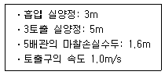
- 16.63m
- 14.63m
- 9.65m
- 8m
(정답률: 62%)
3과목: 공기조화설비
41. 30℃의 외기 40%와 23℃의 환기 60%를 혼합하여 냉각코일로 냉각감습하는 경우 바이패스 팩터가 0.2이면 코일의 출구 온도는? (단, 코일 표면온도는 10℃ 이다.)
- 12.16℃
- 13.16℃
- 14.16℃
- 15.16℃
(정답률: 54%)
42. 진공 환수식 증기난방법에서 저압증기 환수관이 진공펌프의 흡입구 보다 낮은 위치에 있을 때 응축수를 끌어 올 리가 위해 설치하는 것은?
- 역압 방지기
- 리프트 피팅
- 버큠 브레이커
- 바이패스 밸브
(정답률: 82%)
43. 실의 크기가 7m×8m×3m인 회의실에 84명이 있다. 1인당 수증기 발생량이 50g/h이고 실내의 절대습도가 0.0081kg/kg, 외기의 절대습도가 0.0046kg/kg일 때 수증기 배출에 요구되는 환기회수는? (단, 공기의 밀도는 1.2kg/m3 이다.)
- 3회/h
- 4회/h
- 5회/h
- 6회/h
(정답률: 37%)
44. 지역난방에 관한 설명으로 옳지 않은 것은?
- 초기 투자비용이 크다.
- 배관에서의 열손실이 거의 없다.
- 각 건물의 설비면적을 줄이고 유효면적을 넓힐 수있다.
- 설비의 고도화에 따라 도시의 매연을 경감시킬 수있다.
(정답률: 76%)
45. 냉방부하의 종류 중 송풍기 용량 및 송풍량의 산출 요인에 해당하지 않는 것은?
- 외기부하
- 조명부하
- 인체부하
- 일사부하
(정답률: 54%)
46. 배관 내의 유속으로 가장 부적당한 것은?
- 냉수 : 2m/s
- 배수관 : 1.5m/s
- 냉각수 : 1.5m/s
- 펌프 흡입측 : 35m/s
(정답률: 64%)
47. 다음 중 동관의 사용용도로 가장 부적합한 것은?
- 급수관
- 급탕관
- 증기관
- 냉온수관
(정답률: 83%)
48. 흡수식 냉동기에 관한 설명으로 옳지 않은 것은?
- 발생기의 형식에 따라 단효용식과 2중효용식이 있다.
- 증발기, 흡수기, 재생기(발생기), 응축기 등으로 구성 된다.
- 열에너지가 아닌 기계적 에너지에 의해 냉동효과를 얻는다.
- 냉방용의 흡수냉동기는 물과 브롬화리튬(LiBr)의 혼합용액을 사용한다.
(정답률: 76%)
49. 송풍기의 크기를 나타내는 송풍기 번호의 결정방법으로 옳은 것은? (단, 원심 송풍기의 경우)
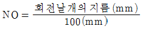
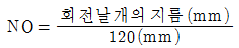
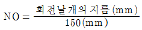
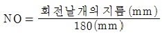
(정답률: 75%)
50. 동일 송풍기에서 회전수를 2배로 했을 경우 풍량, 정압 및 소요동력의 변화량으로 옳은 것은?
- 풍량 4배, 정압 8배, 소요동력 2배
- 풍량 4배, 정압 8배, 소요동력 8배
- 풍량 2배, 정압 8배, 소요동력 4배
- 풍량 2배, 정압 4배, 소요동력 8배
(정답률: 72%)
51. 공기여과기를 통과하기 전의 오염농도 C1= 0.45mg/m3, 통과한 후의 오염농도 C2= 0.12mg/m3이다. 이 여과기의 여과효율은?
- 약 27%
- 약 42%
- 약 58%
- 약 73%
(정답률: 75%)
52. 냉각탑에서 어프로치(approach)에 관한 설명으로 옳은 것은?
- 냉각탑 출구와 입구 수온의 온도차
- 냉각탑 입구와 출구 공기의 습구온도차
- 냉각탑 입구의 수온과 출구공기의 습구온도와의 차
- 냉각탑 출구의 수온과 입구공기의 습구온도와의 차
(정답률: 64%)
53. 온수난방에 관한 설명으로 옳지 않은 것은?
- 증기난방에 비하여 간헐운전에 적합하다.
- 온수의 현열을 이용하여 난방하는 방식이다.
- 한랭지에서는 운전정지 중에 동결의 위험이 있다.
- 증기난방에 비하여 난방부하 변동에 따른 온도조절이 용이하다.
(정답률: 74%)
54. 건구온도 35℃, 절대습도 0.022kg/kg 인 외기와 건구온도 26℃, 절대습도 0.01⑤kg/kg 실내공기를 3:7로 혼합할 경우 혼합공기의 건구온도 및 절대습도는?
- 29.4℃, 0.015kg/kg
- 28.7℃, 0.014kg/kg
- 27.5℃, 0.016kg/kg
- 26.6℃, 0.017kg/kg
(정답률: 67%)
55. 내경 50mm인 관 속을 흐르는 물의 유량은 10.5m3/h 이다. 관의 길이가 10m 일 경우 마찰손실은? (단, 관마찰계수는 0.02 이다.)
- 약 2.4kPa
- 약 4.4kPa
- 약 6.2kPa
- 약 8.2kPa
(정답률: 55%)
56. 냉방부하에 관한 설명으로 옳은 것은?
- 덕트로부터의 취득열은 잠열로만 구성된다.
- 유리창을 통한 취득열은 현열과 잠열로 구성된다.
- 외기의 도입으로 인한 취득열은 현열로만 구성된다.
- 인체의 호흡으로부터 발생하는 열은 현열과 잠열로 구성된다.
(정답률: 74%)
57. 실내 벽면에 설치하기에 가장 부적당한 취출구는?
- 그릴형
- 슬롯형
- 노즐형
- 아네모스탯형
(정답률: 67%)
58. 정풍량 단일덕트방식에 관한 설명으로 옳지 않은 것은?
- 전공기방식에 속한다.
- 2중덕트방식에 비해 에너지 절약적이다.
- 냉풍과 온풍을 혼합하는 혼합상자가 필요없다.
- 각 실이나 존의 부하변동에 즉시 대응할 수 있다.
(정답률: 69%)
59. 덕트 내의 풍속이 10m/s, 정압이 245Pa 일 경우 전압은? (단, 공기의 밀도는 1.2kg/m3 이다.)
- 254Pa
- 272Pa
- 3⑤Pa
- 343Pa
(정답률: 65%)
60. 빙축열 등을 이용하는 축열시스템에 관한 설명으로 옳지 않은 것은?
- 열손실이 줄어든다.
- 심야전력을 이용할 수 있다.
- 열원기기의 고효율운전이 가능하다.
- 주간 피크 시간대에 전력부하를 절감할 수 있다.
(정답률: 66%)
4과목: 소방 및 전기설비
61. 그림과 같이 접속된 회로에서 10[Ω]인 저항 R에 걸리는 전압의 값은?
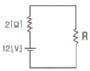
- 2[V]
- 3[V]
- 10[V]
- 12[V]
(정답률: 73%)
62. 10[A]의 전류를 흘렸을 때의 전력이 100[W]인 저항에 20[A]의 전류를 흘렸을 때 전력은?
- 100[W]
- 200[W]
- 300[W]
- 400[W]
(정답률: 50%)
63. 4극의 공조기팬용 유도전동기를 220[V] 60Hz의 전원으로 운전하는 경우 회전수는 얼마인가?(단, 전동기의 슬립(slip)은 5% 임)
- 900[rpm]
- 1710[rpm]
- 1750[rpm]
- 1800[rpm]
(정답률: 68%)
64. 계기용 변성기로서 대전류 회로의 지락사고시 각 상의 불평형 전류를 검출하여 이에 비례한 미소전류를 2차측으로 전하는 기능을 하는 것은?
- 영상 변류기(ZCT)
- 계기용 변류기(CT)
- 계기용 변압기(PT)
- 계기용 변압⋅변류기(MOF)
(정답률: 69%)
65. 정현파 교류의 파형률은 얼마인가?
- 1.0
- 1.11
- 1.414
- 1.571
(정답률: 65%)
66. 역률에 관한 설명으로 옳은 것은?
- 백열전등이나 전열기의 역률은 100%에 가깝다.
- 무효전력에 대한 유효전력의 비를 역률이라고 한다.
- 역률은 부하의 종류와는 관계가 없으며 공급전력의질을 의미한다.
- 역률산정시에 필요한 피상전력은 유효전력과 무효 전력의 산술합이다.
(정답률: 68%)
67. 다음 중 방범설비에 해당하지 않는 것은?
- 비상경보설비
- 출입통제설비
- 침입발견설비
- 침입통보설비
(정답률: 73%)
68. 변압기의 정격용량을 표시하는 단위는?
- [kA]
- [kV]
- [kW]
- [kVA]
(정답률: 70%)
69. 다음 중 옥내 배선의 전선 굵기 결정 요소와 가장 거리가 먼 것은?
- 전압 강하
- 허용 전류
- 외부 온도
- 기계적 강도
(정답률: 75%)
70. 다음 그림과 같이 콘덴서가 접속되어 있을 때 합성 정전용량은?
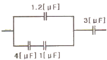
- 2.0[㎌]
- 1.5[㎌]
- 1.2[㎌]
- 1.0[㎌]
(정답률: 45%)
71. 평균구면 광도가 1000[cd]인 전구로부터 총발산 광속은?
- 100π[lm]
- 1000π[lm]
- 4000π[lm]
- 10000π[lm]
(정답률: 49%)
72. 다음 중 휘트스톤 브리지를 이용하는 기기는?
- 모듀트롤 모터
- 차압식 유량계
- 니켈 측온 저항체
- 광전 스위치
(정답률: 63%)
73. 다음 설명에 알맞은 전동기는?
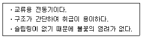
- 분권전동기
- 타여자전동기
- 농형유도전동기
- 권선형유도전동기
(정답률: 71%)
74. 피드백 제어에서 제어요소는 무엇으로 구성되는가?
- 비교부와 조작부
- 비교부와 검출부
- 조절부와 조작부
- 검출부와 조작부
(정답률: 75%)
75. 다음의 에스컬레이터에 관한 설명 중 ( )안에 알맞은 내용은?
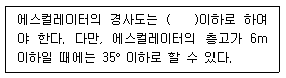
- 15°
- 20°
- 25°
- 30°
(정답률: 69%)
76. 다음 중 전기설비가 얼마나 유효하게 사용되었는 가를 나타내며 어떤 기간 중의 평균 수용 전력[kW]과 그 기간중의 최대 수용전력[kW]과의 비로 표시하는 것은?
- 수용율
- 부하율
- 부등율
- 설비율
(정답률: 47%)
77. 시퀀스(Sequence) 제어에 관한 설명으로 옳은 것은?
- 시퀀스 제어는 일명 피드백(Feedback)제어라고도 한다.
- 시퀀스 제어계의 신호처리 방식은 유접점 방식만 있다.
- 미리 정해진 순서에 따라 제어의 각 단계를 순차적으로 제어한다.
- 시퀀스 제어 회로의 주전원과 조작전원은 반드시 동일해야 한다.
(정답률: 83%)
78. 피뢰침에 근접한 뇌격을 흡인하여 전극으로 확실하게 방류하기 위하여 필요한 것은?
- 도체저항이 커야 한다.
- 접촉저항이 커야 한다.
- 접지저항이 작아야 한다.
- 돌침의 보호각이 작아야 한다.
(정답률: 64%)
79. 전력요금이 kWh당 300원이다. 200W TV수상기를 하루 4시간씩 시청하였을 때 1달(30일) 사용료는?
- 2400원
- 3600원
- 7200원
- 8400원
(정답률: 74%)
80. 건물의 자동제어방식에서 디지털방식에 해당하는 것은?
- 전기식
- 전자식
- 공기식
- DDC방식
(정답률: 82%)
5과목: 건축설비관계법규
81. 건축법령상 다음과 같이 정의되는 용어는?
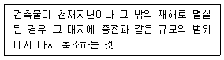
- 증축
- 재축
- 개축
- 대수선
(정답률: 77%)
82. 축냉식전기냉방설비의 설계기준 내용으로 옳지 않은 것은?
- 열교환기는 시간당 최소냉방열량을 처리할 수 있는 용량 이상으로 설치하여야 한다.
- 자동제어설비는 축냉운전, 방냉운전 또는 냉동기와 축열조를 동시에 이용하여 냉방운전이 가능한 기능을 갖추어야 한다.
- 축열조는 보온을 철저히 하여 열손실과 결로를 방지해야 하며, 맨홀 등 점검을 부분은 해체와 조립이 용이하도록 하여야 한다.
- 부분축냉방식의 경우에는 냉동기가 축냉운전과 방냉운전 또는 냉동기와 축열조의 동시운전이 반복적으로 수행하는데 아무런 지장이 없어야 한다.
(정답률: 61%)
83. 건축물을 건축하거나 대수선하는 경우 국토해양부령으로 정하는 구조기준 등에 따라 그 구조의 안전을 확인하여야 하는 대상 건축물 기준으로 옳지 않은 것은?
- 층수가 3층 이상인 건축물
- 높이가 12m 이상인 건축물
- 처마높이가 9m 이상인 건축물
- 기둥과 기둥사이의 거리가 10m 이상인 건축물
(정답률: 47%)
84. 하수도법상 건물⋅시설 등에서 발생하는 오수를 침전⋅분해등의 방법으로 처리하는 시설로 정의되는 것은?
- 하수관거
- 개인하수도
- 분뇨처리시설
- 개인하수처리시설
(정답률: 45%)
85. 다음 중 외기에 면하고 1층 또는 지상으로 연결된 출입문을 방풍구조로 하지 않아도 되는 것은? (단, 사람의 통행을 주목적으로 하며, 너비가 1.2m를 초과하는 출입문인 경우)
- 호텔의 주출입문
- 공동주택의 출입문
- 공기조화를 하는 업무시설의 출입문
- 바닥면적의 합계가 500m2 인 상점의 주출입문
(정답률: 68%)
86. 다음 중 하수도 시설에 포함되지 않는 것은?
- 하수관거
- 정수시설
- 배수설비
- 분뇨처리시설
(정답률: 59%)
87. 다음은 스프링클러설비의 설치면제 요건에 관한 기준 내용이다. ( )안에 적합한 설비는?
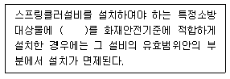
- 연결살수설비
- 옥외소화전설비
- 물분무등소화설비
- 간이스프링클러설비
(정답률: 53%)
88. 건축법령상 제2종 근린생활시설에 해당하지 않는 것은?
- 한의원
- 동물병원
- 노래연습장
- 일반음식점
(정답률: 80%)
89. 바닥면적이 100m2인 초등학교 교실에 채광용 창면적이 6m2이다. 부족한 면적을 천창으로 처리하고자 할 때 요구 되는 천창의 최소 면적은?
- 2m2
- 4m2
- 8m2
- 14m2
(정답률: 54%)
90. 다음 중 건축물의 건축허가 신청시 에너지절약계획서를 제출해야 하는 대상 건축물 기준으로 옳은 것은?
- 공동주택 중 아파트 및 연립주택
- 숙박시설로서 그 용도에 사용되는 바닥면적의 합계가 1000m2 이상인 건축물
- 판매시설로서 그 용도에 사용되는 바닥면적의 합계가 2000m2 이상인 건축물
- 업무시설로서 당해 용도에 사용되는 바닥면적의 합계가 2000m2 이상인 건축물
(정답률: 47%)
91. 방염성능기준 이상의 실내장식물 등을 설치하여야 하는 특정소방대상물에 해당하지 않는 것은?
- 아파트
- 숙박시설
- 종합병원
- 방송통신시설 중 방송국 및 촬영소
(정답률: 81%)
92. 국토해양부장관과 환경부장관이 지속가능한 개발의 실현과 자원절약형이고 자연친화적인 건축물의 건축을 유도하기 공공으로 실시하는 제도는?
- 친환경건축물 허가제도
- 친환경건축물 신고제도
- 친환경건축물 인증제도
- 친환경건축물 권장제도
(정답률: 75%)
93. 다음은 건축법상 지하층의 정의이다. ( )안에 알맞은 것은?
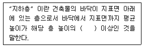
- 2분의 1
- 3분의 1
- 3분의 2
- 4분의 3
(정답률: 79%)
94. 판매시설로서 전층에 스프링클러설비를 설치하여야 하는 경우에 관한 기준 내용으로 옳지 않은 것은?
- 연면적이 8000m2 이상인 것
- 수용인원이 500명 이상인 것
- 층수가 3층 이하인 건축물로서 바닥면적의 합계가 6000m2 이상인 것
- 층수가 4층 이상인 건축물로서 바닥면적의 합계가 5000m2 이상인 것
(정답률: 44%)
95. 다음 소방시설 중 소화활동설비에 해당하지 않는 것은?
- 제연설비
- 비상콘센트설비
- 무선통신보조설비
- 상수도소화용수설비
(정답률: 55%)
96. 다음 중 다중이용건축물에 해당하지 않는 것은? (단, 16층 미만인 건축물인 경우)
- 종교시설의 용도로 쓰는 바닥면적의 합계가 5,000m2 이상인 건축물
- 판매시설의 용도로 쓰는 바닥면적의 합계가 5,000m2 이상인 건축물
- 업무시설의 용도로 쓰는 바닥면적의 합계가 5,000m2 이상인 건축물
- 의료시설 중 종합병원의 용도로 쓰는 바닥면적의 합계가 5,000m2 이상인 건축물
(정답률: 65%)
97. 승용승강기 설치 대상 건축물로서 6층 이상의 거실 면적의 합계가 6,000m2 인 경우, 다음 중 설치하여야 하는 승용승강기의 최소 대수가 가장 많은 건축물의 용도는?
- 병원
- 업무시설
- 숙박시설
- 공공주택
(정답률: 72%)
98. 신축 또는 리모델링하는 100세대 이상의 공동주택은 시간당 최소 몇 회 이상의 환기가 이루어질 수 있도록 자연환기설비 또는 기계환기설비를 설치하여야 하는가? (단, 기숙사 제외) (관련 규정 개정전 문제로 여기서는 기존 정답인 2번을 누르면 정답 처리됩니다. 자세한 내용은 해설을 참고하세요.)
- 0.5회
- 0.7회
- 1.2회
- 1.5회
(정답률: 28%)
99. 건축물의 건축허가신청에 필요한 설계도서 중 건축계획서에 표시하여야 할 사항에 해당하지 않는 것은?
- 주차장 규모
- 건축물의 용도별 면적
- 공개공지 및 조경계획
- 에너지절약계획서(해당 건축물에 한함)
(정답률: 46%)
100. 건축물의 높이 기준이 60m인 건축물에서 허용되는 높이의 오차범위는?
- 0.6m
- 0.9m
- 1.0m
- 1.2m
(정답률: 48%)